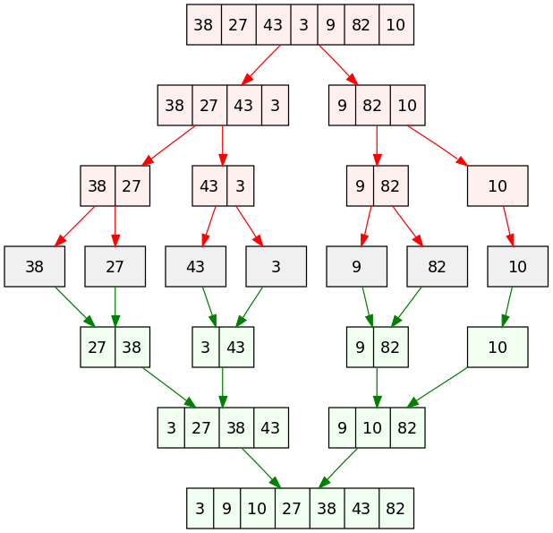
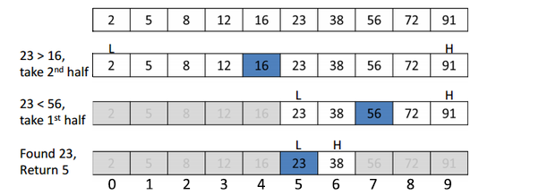

Sorting and Searching
Sorting and searching algorithms are very important when working with large amounts of data. When working with large data sets, the difference between a fast and slow algorithm can be quite significant, so it is important to use an algorithm that is effective to your needs.
Time Complexity
Time complexity is a term that will be used quite frequently when describing the algorithms below. Time complexity describes the amount of time it takes to run an algorithm. Since an algorithm's running time may vary depending on the data set it is running on, the worst-case time complexity is usually considered. The worst-case time complexity is the maximum amount of time required for a data set of a given size. Time complexity is generally expressed as a function of the data set size, called big O notation. Learn More

Sorting Algorithms
A sorting algorithm is an algorithm that does exactly what it says on the package, it sorts a data structure into a specific order. Learn More
Bubble Sort
Bubble sort is the simplest sorting algorithm. It works by repeatedly swapping adjacent pairs of elements if they are in the wrong order.
For example, to sort an array from smallest to largest:
{3, 72, 12, 47, 23} -> {3, 72, 12, 47, 23}
{3, 72, 12, 47, 23} -> {3, 12, 72, 47, 23}
{3, 12, 72, 47, 23} -> {3, 12, 47, 72, 23}
{3, 12, 47, 72, 23} -> {3, 12, 47, 23, 72}
Obviously, the current array, {3, 12, 47, 23, 72}, isn't in order.
Bubble sort will repeat this swapping process until no swaps are made, meaning the array is sorted.
public static void bubbleSort(int[] arr) {
int n = arr.length;
for(int i = 0; i < n; i++) {
for(int j = 0; j < n-i-1; j++) {
if(arr[j] < arr[j+1]) {
int temp = arr[j];
arr[j] = arr[j+1];
arr[j+1] = temp;
}
}
}
}
Time complexity: O(n2)
A more optimized implementation of this sort would be to check at the end of each inner loop to see if any swaps happened. This is as simple as adding a boolean to the loop.
public static void bubbleSort(int[] arr) {
int n = arr.length;
for(int i = 0; i < n; i++) {
boolean swapped = false;
for(int j = 0; j < n-i-1; j++) {
if(arr[j] < arr[j+1]) {
int temp = arr[j];
arr[j] = arr[j+1];
arr[j+1] = temp;
swapped = true;
}
if(!swapped)
break;
}
}
}
Worst and average time complexity: O(n2)
Best time complexity: O(n)
Insertion Sort
An insertion sort is a simple sorting algorithm that sorts similarly to how one sorts playing cards in their hands.
For example, to sort an array from smallest to largest:
{3, 72, 12, 47, 23} -> {3, 72, 12, 47, 23}
{3, 72, 12, 47, 23} -> {3, 72, 12, 47, 23}
{3, 72, 12, 47, 23} -> {3, 12, 72, 47, 23}
{3, 12, 72, 47, 23} -> {3, 12, 47, 72, 23}
{3, 12, 47, 72, 23} -> {3, 12, 23, 47, 72}
Basically, the algorithm loops through the array, and "inserts" the current element into the correct location if the element is out of place.
In the case of this specific order (from smallest to largest), the algorithm moves the current element if it is smaller than the previous elements.
public static void insertionSort(int[] arr) {
for(int i = 0; i < arr.length; i++) {
int key = arr[i];
int j = i-1;
while(j >= 0 && arr[j] > key) {
arr[j+1] = arr[j];
j--;
}
arr[j+1] = key;
}
}
Time complexity: O(n2)
Merge Sort
Merge sort is a divide and conquer algorithm that is considerably faster than the previous sorts. This algorithm works by recursively halving itself until each subarray reaches a length of 1. Then all the subarrays are recursively merged into sorted pairs until there is one final sorted array.
Source: Wikipedia
public static void merge(int[] arr, int left, int mid, int right) {
int n1 = mid-left+1;
int n2 = right-mid;
int L[] = new int[n1];
int R[] = new int[n2];
for(int i = 0; i < n1; ++i)
L[i] = arr[left+i];
for(int j = 0; j < n2; ++j)
R[j] = arr[mid+1+j];
int i = 0, j = 0;
int k = left;
while(i < n1 && j < n2) {
if (L[i] <= R[j]) {
arr[k] = L[i];
i++;
} else {
arr[k] = R[j];
j++;
}
k++;
}
while(i < n1) {
arr[k] = L[i];
i++;
k++;
}
while(j < n2) {
arr[k] = R[j];
j++;
k++;
}
}
//left is for the left index and right is for the right index of the subarray to be sorted.
//left would be 0 and right would be arr.length-1 when calling the sort method
public static void mergeSort(int[] arr, int left, int right) {
if(left < right) {
//finds the middle point
int mid = left+(right-left)/2;
//sorts both halves
sort(arr, left, mid);
sort(arr, mid+1, right);
//merges sorted halves
merge(arr, left, mid, right);
}
}
Time complexity: O(n log n)
Searching Algorithms
A searching algorithm is used when a specific value must be found within an array. Learn More
Sequential Search
Sequential search, or linear search, is a simple searching algorithm that traverses the entire array, while comparing the key value to each element. The key value is compared to each element until the index of the key value is found, or until it has finished comparing the key to every element.
public static int linearSearch(int[] arr, int key) {
int n = arr.length;
for(int i = 0; i < n; i++) {
if(arr[i] == key)
return i;
}
return -1; //return -1 if the key is not found
}
Time complexity: O(n)
Binary Search
Binary search is a divide and conquer searching algorithm. When searching through a sorted array, binary search is far more efficient than sequential search. Binary search recursively searches through the array by choosing the value in the middle of the array, and comparing it to the key. Since this is a sorted array, if the middle value is larger than the key, the algorithm searches the lower half of the array. If the middle value is smaller, it searches the upper half. It continues searching each chosen subarray until the value is found.
Source: Quora
public static int binarySearch(int arr[], int left, int right, int key) {
if (right >= left) {
int mid = left+(right-left)/2;
//if the value is at the middle
if (arr[mid] == key)
return mid;
//if the value is smaller than the middle, then it is in the left(smaller) subarray
if (arr[mid] > key)
return binarySearch(arr, left, mid-1, key);
//else the value is larger, and is in the right(larger) subarray
return binarySearch(arr, mid+1, right, key);
}
return -1; //return -1 if the key is not found
}